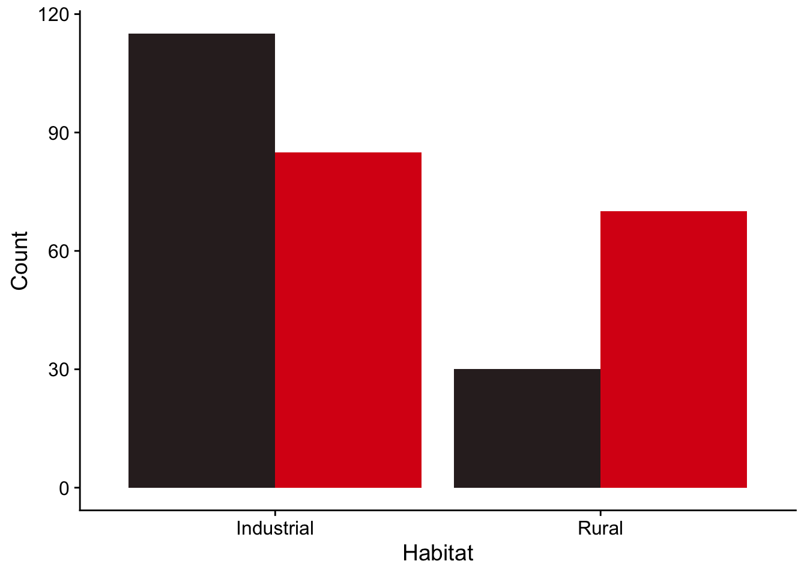
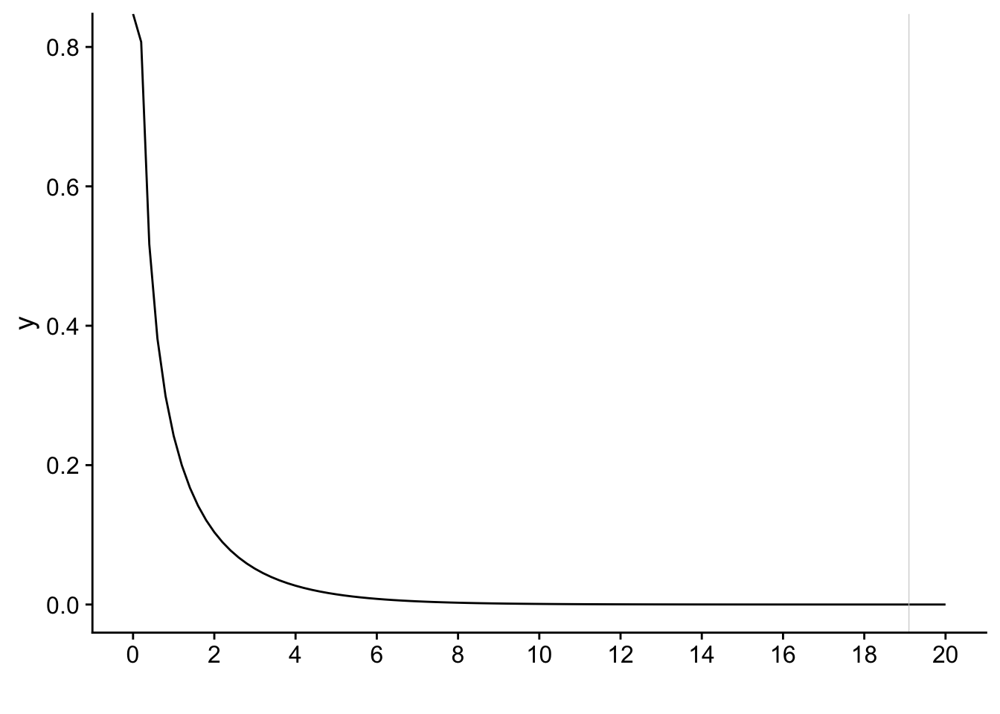

Chapter 2 Chi-square analysis
2.1 Chi-square goodness of fit test
A chi-square analysis is used when our data are in the form of raw counts for two or more categorical groups eg pea plants with either yellow peas or green peas, survival rate of mice if they took drug A or took drug B, etc. Each independent observation must definitely belong to either one group or the other, and there are no replicates. That is, for each category we just have one count.
What we do is compare the counts we got to some expected value according either to chance or to some prior theory.
For example:
If we were tossing a fair coin 1000 times we would expect 500 heads and 500 tails, ie heads and tails in the proportion 1:1. In reality, if the coin were fair, we would probably get roughly the same number of heads and tails, but probably not exactly 500 of each. How far from 50:50 would the proportion of heads and tails have to be before we would be justified in rejecting the idea that the coin is fair?
If we threw a fair dice a large number of times we would expect each possible score, from 1 to 6, to occur the same number of times. ie each score would occur 1/6th of the time. In reality we would probably get each score roughly 1/6 of the time, but not exactly 1/6. How far from the expected proportions could the numbers of each score get before we would be justified in thinking that the dice was not fair?
If the basic idea of Mendelian inheritance with independent assortment involving a single gene is correct, then we would expect that if we crossed a large number of pea plants that were heterozygous for yellow and green pea colour, with yellow being dominant, then the offspring would have yellow:green peas in the ratio 3:1 (plants with genotypes YY, Yy, yY would all have yellow seeds and only those with yy would have green seeds). In practice, if the inheritance were according to the simplest type of Mendelian inheritance (ie involving just one gene, amongst other things) we would probably get yellow:green offspring in a ratio that was approximately but not exactly 3:1. How far from 3:1 would the ratio need to be before we would justified in claiming that the outcome was inconsistent with the Mendelian prediction?
In a chi-square ‘goodness of fit’ test, we are testing data where we have a number of counts for each of two or more possible outcomes of some procedure (heads/tails, dice scores etc). We have an idea of how these counts should be distributed under some null hypothesis (the coin is fair, the dice is fair, genetic inheritance works in this or that way etc). The chi-square goodness of fit test tests how likely it is we would have got the counts we actually got if that null hypothesis were correct. We are testing how well our actual counts ‘fit’ the expected values.
In a typical software implementation of the test, such as in R, we give it the counts we actually got for each possible outcome and also the expected proportion for each outcome. The test then gives us a p-value, a probability, for how likely it is that we would have got the counts we actually got, or counts even furthe from the null hypothesis, if that null hypothesis were correct. If this p-value is too small, and usually, by that we mean less than 0.05, then we reject the null hypothesis.
2.1.1 Example
Suppose we have crossed pea plants that were all heterozygous for yellow/green pea colour. In the F1 generation we get 176 offspring , of which 130 were yellow and 46 were green.
The data here are raw counts, and an individual pea plant offspring contributes either to the yellow count or to the green count, but not to both.
Our expected counts of yellow and green are found by simply dividing the total count of offspring, 176, in the ratio 3:1, giving us an expected 132 yellow pea plants and an expected 44 green pea plants in the offspring F1 generation.
2.1.2 Doing the chi-square test in R
What we do in R is use the chisq.test() command to see how likely it is we would have got counts of 130 and 46 if the null hypothesis, with its expected counts in the ratio 3:1, were true.
We do it like this:
chisq.test(c(130,46),p=c(0.75,0.25))There are two arguments. The first is the counts we got, which we enter as a ‘vector’ c(z,y,....), so we write c(130,46). The second is a vector of the proportions we expect for the two counts, where these proportions should add up to one. So for our expected 3:1 ratio we enter c(0.75,0.25).
Let’s do it: type the above command into the console window (bottom left). You will get an output something like this:
##
## Chi-squared test for given probabilities
##
## data: c(130, 46)
## X-squared = 0.12121, df = 1, p-value = 0.7277This output is typical of tests done in R. We get the ‘test statistic’ whose name varies depending on the test. Here it is called X-squared, pronounced chi-squared. This is a number that the test calculates, based on the data you have given it. For the most part, we don’t need to worry about how it does that. Then there is the p-value, which is the probability of getting this test statistic if the null hypothesis were true.
In this case, we see that the p-value is 0.73, which is large. We could very plausibly have got yellow:green numbers of 130 and 46 if the null hypothesis were true, so we cannot reject that null hypothesis. In other words, our data are consistent with the predictions of simple Mendelian inheritance.
2.1.3 Reporting the result in English
In English, we might report this result as:
We found counts of 130 yellow plants and 46 green plants, which are consistent with the predictions of Mendelian inheritance (chi-squared test, X-squared = 0.12, p=0.73).
Note that we do not say we have proved Mendelian inheritance to be correct. We haven’t. We never prove things in science. We haven’t said anything about the truth of the null hypothesis. All we can say is whether our data are or are not consistent with the null hypothesis. In this case they are. We then report the test we used and the values of the test statistic and p-value. Other tests might give you other details to report too.
2.2 Exercise 1.
Suppose you tossed a fair coin 100 times and got 45 heads and 55 tails.
- Under a null hypothesis that the coin is fair, what would the expected numbers of heads and tails be?
You use R to do a chi-square test of that null hypothesis. Here is the code to do that and the output it would give:
##
## Chi-squared test for given probabilities
##
## data: c(45, 55)
## X-squared = 1, df = 1, p-value = 0.3173What do you conclude?
How would you report the result?
2.2.1 Solution. 1
The expectation is that half the outcomes would be heads and half would be tails.
##
## Chi-squared test for given probabilities
##
## data: c(45, 55)
## X-squared = 1, df = 1, p-value = 0.3173The null hypothesis of this test is that heads and tails are equally likely, ie that the coin is fair. Under this null hypothesis the expected outcome is 50 heads and 50 tails. From the output of the R code we see that the p-value, the probability of getting an outcome as far or further from that, is 0.317. That is pretty high. Would you do anything if you knew that the probability of a bad (or worse) outcome was 0.317? In particular, this p-value is greater than 0.05, so we cannot reject the null hypothesis that the coin is fair. That is, even with a fair coin it is not at all unlikely that you would get head/tail numbers as different from 50/50 as 45/55 if you tossed the coin 100 times. That will happen about 1/3 of the time if you repeatedly do trials where you toss the coin 100 times.
To report this result, you might say something like
From 100 coin tosses we got 45 heads and 55 tails. These counts are consistent with the coin being fair (chi-squared test, X-squared = 1, p=0.317).
2.3 2-way chi square analysis: test of independence
Taken from Chapter 5: Beckerman, Childs and Petchey: Getting Started with R
A common scenario where we have count data is that there are two explanatory factors each with two or more levels that enable us to classify the data. This can happen when something is either true or not true, and a test for for this truth gives either a positive or a negative result. We might want to know if the test to determine truth was any better than flippig a coin: is there some association between what the truth is (eg I do or do not have a disease) and what the test says about that (testing positive or negative for the disease). Our data would be counts of people in each of four categories: have the disease / test positive, have the disease / test negative, do not have the disease / test positive and do not have the disease / test negative.
We are going to analyse another scenario to see if there is evidence for an association between two factors. We have some count data of ladybirds found in an industrial and in a rural location. Some of the ladybirds are red and some are black. We would like to test for whether there is an association between the ladybird colour and its location. If there isn’t then we would expect the proportion of black to red ladybirds to be roughly the same in both habitats. If there is, then we would expect the proportions to be different, meaning that knowing the habitat would tell us something about the likelihood of a ladybird found there being black or red.
Behind this the research purpose might be to investigate whether matching of morphological colour of the ladybirds to the prevalent colour of the environment confers an evolutionary advantage. If it does then we would expect there to be an association between morphological colour and environment so that the proportion of black to red ladybirds would be higher in a grimy industrial setting than in it would be in a rural setting.
We will use a Chi-Square contingency analysis to investigate this. This type of analysis is used when you have
- Count data - how many red ladybirds in a rural setting, how many in an industrial setting, how many black ladydbirds in each of the settings?
- Enough count data - typically at least 5 individuals for each combination of the levels in question, which would be rural/red, rural/black, industrial/red and industrial/black in this case.
- Independent counts - each ladybird contributes to only one total. For example, if it is red and found in a rural location, then it contributes to the count of red ladybirds found in a rural location, and not to any other sub-total, such as black ladybirds found in a rural location.
2.3.1 Hypotheses
What do you think a suitable hypothesis should be for this investigation, and what would the corresponding null hypothesis be?
- The null hypotheses could be: H0: There is no association between habitat and ladybird colour. This means that whatever the proportion is of black to red ladybirds, it is the same in both habitats.
- The alternate hypothesis could be: H1: There is an association between habitat and ladybird colour.
2.3.2 Summarise the data.
The data consist of counts of the number of ladybirds of each colour that were observed in 10 rural locations and 10 industrial locations.
Here is a summary of that data:
## morph_colour
## Habitat black red
## Industrial 115 85
## Rural 30 70# Calculate the totals of each colour in each habitat.
totals<- lady |>
group_by(Habitat,morph_colour) |>
summarise (total.number = sum(number))
# totals |>
# kbl() |>
# kable_styling(full_width=FALSE)
totals## # A tibble: 4 × 3
## # Groups: Habitat [2]
## Habitat morph_colour total.number
## <chr> <chr> <dbl>
## 1 Industrial black 115
## 2 Industrial red 85
## 3 Rural black 30
## 4 Rural red 702.3.3 Plot the data.
Now that we have these totals we can use them to plot a bar chart of the data:
# plot the data, with sensible colours
totals |>
ggplot(aes(x = Habitat,y = total.number,fill=morph_colour))+
geom_col(position='dodge') +
labs(x="Habitat",
y="Count",
fill= "Colour") +
scale_fill_manual(values=c(black='#312626',red='#da1717')) + # this line manually sets the colours for us
theme(legend.position="none")
2.3.4 Interpret the graph before we do any ‘stats’
Look at the plot - does it look as though the proportion of black to red ladybirds is the same in the two habitats? Do you expect to retain or to reject the null hypothesis, which says that there is no association between habitat and ladybird colour, and hence that the proportions are the same?
2.3.5 The Chi-square test
To do a chi square test, it helps to set out these data as a 2 x 2 table:
## morph_colour
## Habitat black red
## Industrial 115 85
## Rural 30 70This kind of table is sometimes called a contingency table.
When we give these numbers to some statistical software such as R and ask it to carry out a ‘chi-square test’ it will use the data to calculate a ‘test statistic’ \(X^2\) by comparing the actual counts of the ladybirds in the table above with their expected counts under the null hypothesis. The further the actual counts are from their expected values, on the whole, the bigger this test statistic will be. For the gory (they are not that gory!) details on how this done, see the section below but do note that, while these are interesting, if you find that kind of thing interesting, as I do, you do not need to be familiar with them to be able to apply a chi-square test. What you do need to know is when it is OK to use one, and when it is not, as is true for any statistical test.
We’ll turn to that issue now:
Providing a number of conditions are met by the data (principally, that they are count data, that all the cell values are greater than or equal to about five and that they are all independent ie any ladybird contributes to the count of only one cell), this test statistic \(X^2\) has a so-called ‘chi-squared’ distribution. This is a known mathematical distribution, which makes it possible to calculate the probability that the statistic would be as big as it is, or bigger, if the null hypothesis were true. We call this probability the p-value.
This is generally how statistical tests work. They take your data and use it in a carefully chosen way to calculate some number that in general is called a test statistic but which is referred to by different names when calculated for particular tests. How it is calculated depends on the test and these days we never have to do the calculations. That’s taken care of by software like R. Providing the data meet certain criteria, the statistic will typically have a probability distribution. This means that the probability that it will exceed a given value if the null hypothesis is true can be calculated. This probability is the p-value. If the p-value is very small, and by that we typically mean less than 0.05 or 0.01, then we can reject the null hypothesis.
When we run a chi-square test in R on the data in the table above it gives us this as output:
##
## Pearson's Chi-squared test with Yates' continuity correction
##
## data: lady.mat
## X-squared = 19.103, df = 1, p-value = 1.239e-052.3.6 Yates continuity correction
This adjusts for the fact that our data are discrete and the chi-square distribution that we are using to calculate the p-values is continuous. That’s it.
2.3.7 Conclusion
Study the output of the chi-square test. Note that you are given a test-statistic (here called Chi-squared/X-squared) and a number of degrees of freedom (df) (in some tests you are given more than one of these). This is the number of independent pieces of information used to calculate the test statistic. Lastly, you are a given a p-value. This is the probability that you would have got a chi-squared value as big or bigger than the one you got if the null hypothesis were true. Here the null hypothesis is that there is no association between ladybird colour and location. Put another way, it is, roughly speaking the probability of getting the data you actually got if the null hypothesis were true.
An appropriate way to report these data would be:
‘Ladybird colour morphs are not equally common in the two habitats (Chi-sq =19.3, df = 1, p<0.001)’
2.4 The Chi-Square Test explained (advanced)
You can skip this section if you are not interested in how the chi-square test works. If you are, read on.
Let’s recall the number of sightings of each colour of ladybird in each habitat:
## morph_colour
## Habitat black red
## Industrial 115 85
## Rural 30 70If there were no association between colour and habitat, then we would expect the relative proportions of colour to be independent of habitat. That is they should be the same in both rural and industrial habitats. Looking at the table above we see that two thirds (200 out of 300) of all sightings, regardless of colour, were in an industrial habitat. Hence we would expect that two thirds of all 145 black sightings would be in an industrial habitat. We thus arrive at an ‘expected’ number for sightings of black butterflies in an industrial habitat to be \((200/300) \times 145 = 96.7\). Similarly, we would expect one third (100 out of 300) of all 155 red sightings to be in a rural habitat, giving an ‘expected’ number for this combination of levels to be \((100/300)\times 155 = 51.7\). More generally, the expected number in an any cell of the table, under the null hypothesis of no association between the two factors is given by
\[\text{expected number}=\frac{\text{row total}\times\text{column total}}{\text{grand total}}\] Using this method, these are the four expected numbers for each combination of levels of the two factors we have:
## [,1] [,2]
## [1,] 96.67 103.33
## [2,] 48.33 51.67To get a measurement of how far the actual table numbers are from their expected values we can, for each cell, square the difference between the expected and actual values, then divide the result by the actual value, and finally sum the four results that we get. This has the effect of giving equal weight to positive or negative deviations of the observed values from the expected values, and scales each squared deviation so that all four have equal weight in the final sum. The result is the chi-squared test statistic:
\[ \begin{align*} X^2&=\sum_{i=1}^4\frac{(O_i-E_i)^2}{E_i}\\ &=\frac{(115-96.67)^2}{96.67} + \frac{(85-103.33)^2}{103.33} + \frac{(30-48.33)^2}{48.33} + \frac{(70-51.67)^2}{51.67}\\ &=20.189 \end{align*} \]
Yates continuity correction (digression)
You may have noticed that the \(X^2 = 20.189\) value calculated above is slightly larger than the value calculated by the chisq.test() function, which found \(X^2 = 19.096\). This is because the function uses Yates continuity correction. This was suggested by Yates in 1934 to correct for the fact that the \(X^2\) statistic we calculate is actually discrete (becuase we have categorical data) whereas the chi-square distribution is continuous. This means that the value we calculate tends to be too big so that our p-values are too small. The problem is most apparent where we have small numbers and one degree of freedom, which is what you have in a \(2 \times 2\) contigency table such s in the example above. Yates’ fix is quite simple: just amend the \(X^2\) statistic to the following:
\[ X^2=\sum_{i=1}^4\frac{(\lvert O_i-E_i \rvert - 0.5)^2}{E_i} \]
where the vertical lines mean ‘take the absolute value of’, so that |85-103.33| = |-18.33| = 18.33
This gives us
\[
\begin{align*}
X^2&=\sum_{i=1}^4\frac{(\lvert O_i-E_i \rvert - 0.5)^2}{E_i}\\
&=\frac{(|115-96.67|-0.5)^2}{96.67} + \frac{(|85-103.33|-0.5)^2}{103.33} + \frac{(|30-48.33|-0.5)^2}{48.33} + \frac{(|70-51.67|-0.5)^2}{51.67}\\
&=19.096
\end{align*}
\]
which is exactly what the chisq.test() function gives.
Under a null hypothesis of no association between habitat and colour all the counts would be the ‘expected’ values, and \(X^2\) would be zero. The further away from these values the actual results are, the bigger \(X^2\) will be and the more likely it is that we can reject the null. For a sufficiently large value of \(X^2\) we will reject the null. To sum up, in general we will reject the null when \(X^2\) is large, and fail to reject it when it is small.
But how large is large enough to reject the null?
To answer this we use the fact that the sampling distribution of \(X^2\) is a chi-squared distribution with (in this case) \((2-1) \times (2-1) = 1\) degrees of freedom.
The p-value given in a chi-square test is the probability of getting a chi-squared statistic \(X^2\) as big as or bigger than the one you actually got. This is the area under the chi-squared distribution with the appropriate number of degrees of freedom to the right of the test-statistic value \(X^2\).
xsquared<-19.1
ggplot(data.frame(x = c(0,20)), aes(x = x)) +
stat_function(fun = dchisq, args = list(df = 1)) +
stat_function(fun = dchisq, args = list(df = 1), xlim = c(xsquared, 20),
geom = "area", fill = "#84CA72", alpha = .2) +
scale_x_continuous(name = "", breaks = seq(0, 20,2)) +
geom_vline(xintercept=xsquared,linewidth=0.2,colour="gray80") +
theme_cowplot()
2.4.1 Why does the test statistic have this distribution?
To answer this, let us recognise that in our observed contingency table, where we have N observations altogether, we can think of their being a probability \(P_i\) that any individual observation will end up in cell i, with the actual observed frequency in that cell, \(O_i\) being the product of this probability and the total number of observations: \(O_i = P_i\times N\). If we repeated the study again and again we would get slightly different numbers in each cell each time. The distribution of the numbers in a particular cell would follow similar rules as that of the number of heads we might get each time if we tossed a coin N times, then did the same again and again. This distribution is called a binomial distribution.
In other words, our observed frequencies have been obtained by sampling from a binomial distribution, where \(O_i \sim \text{Binomial}(P_i,N)\). Now, providing N is large enough and providing too that the probabilities \(P_i\) are not too close to 0 or 1, then the binomial distribution resembles a normal distribution. Thus, providing \(P_i\times N\), that is providing the observed frequencies \(O_i=P_i\times N\) are large enough, then the \(O_i\) will be approximately normally distributed.If this is the case, then so too is \(\frac{(O_i-E_i)}{\sqrt{E_i}}\) since the expected values \(E_i\) are fixed quantities and all this transformation does is turn our normal distribution into a standard normal distribution, with mean = 0 and standard deviation = 1. ie it shifts and squishes the distribution.
Hence in our expression for our test statistic \(X^2\) what we are doing is adding up k (= 4 in this case) squared standard normal distributions. This is the definition of a chi-squared distribution with four degrees of freedom. Thus we see that the sampling distribution of our test statistic is a chi-squared distribution.
The one final slightly odd detail is that when we run a chi-square test for a 2 x 2 contingency table we are told that there is one degree of freedom. In general, for \(m \times n\) table, there will be \((m-1)\times(n-1)\) degrees of freedom. This is because the test presumes that the row and column total are already known. If that is the case then if one value of a 2x2 table is known, the other 3 values can be found by deduction. Hence there only one value (it doesn’t matter which one) can be chosen freely.